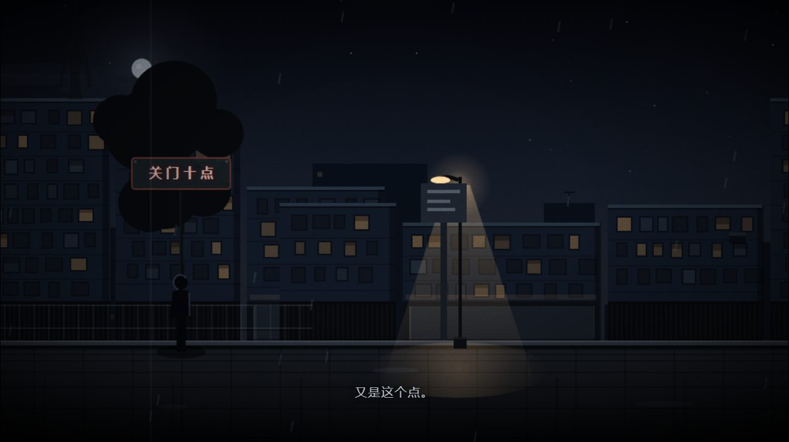
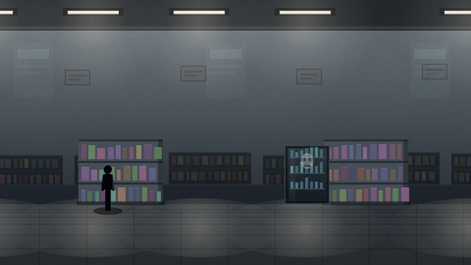
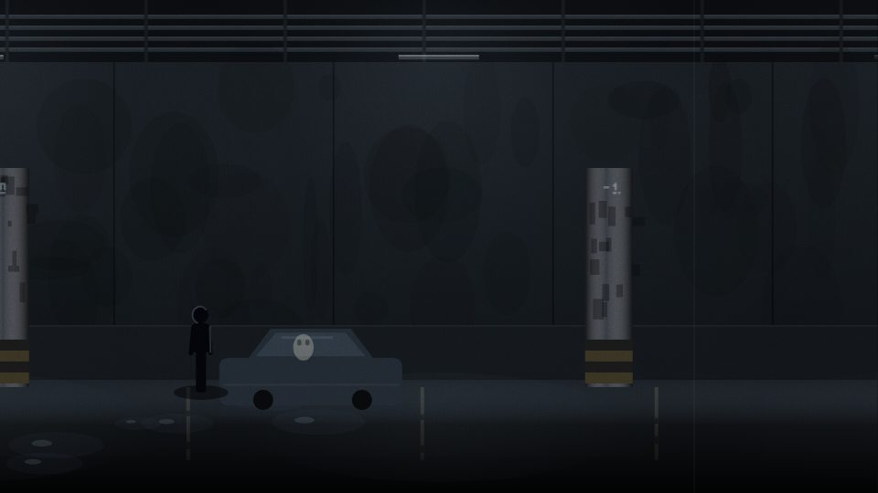
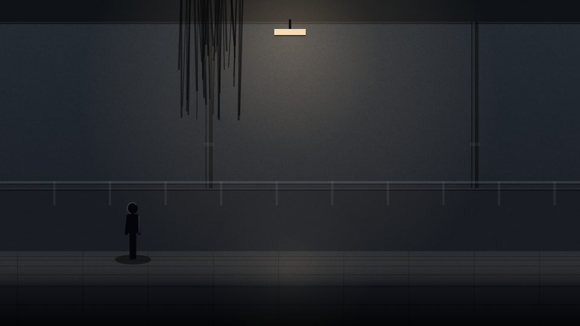
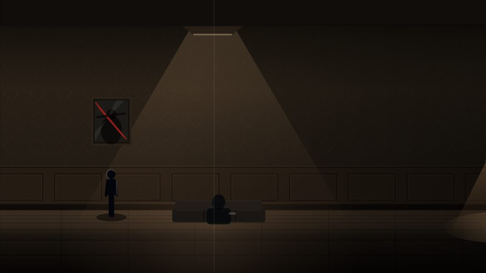

这是一款走路游戏
没有战斗，没有背包，没有可以打的东西。你只是下班，穿过四条街、一个车库、五层楼，回到自己家门口。
问题在于，这一路会记住你走了多少步，回了多少次头。
06段 路
25分 钟
0次 战 斗
1个 跟 着 你 的 东 西
六段路
每一段都以一次惊吓结束。之后你会拿到一张章节卡——上面的字，不一定还是原来那几个。




它记得你
按下 ↓ 可以回头看。这是本作唯一一个「技能」，也是唯一一个陷阱。
LOOK BACK
回头
回头看能确认它在哪，但它也会因此靠近一点。回得越频繁，距离越短；贴到背上，你会被拽回去一段路。
MEMORY
记忆污染
看见它的次数会累积成「记忆」。记忆越高，路牌上的字越不对：和平路会变成和平路无人，限高 2.1m 会变成 1.6m。
SAVE
存档
每章自动存在本机。偶尔，主界面会出现一个不属于你的进度——「继续第 3 章 · 不是你的」。那不是 bug。
SUBTITLE
字幕
它离得越近，字幕越结巴，字会重复、会叠出回声。到后来，连主界面的标题都开始重复。
← → 走 · ↑ 快走 · ↓ 回头看 · ESC 暂停 / 设置 · F11 全屏
下载
不想装东西就直接在线玩，存档在浏览器里。要独立程序、离线跑、不依赖浏览器，就下桌面版：Electron 打包，不装环境、不联网、不写注册表（除了自己的存档目录）。
在线版 · 浏览器直接玩
无需安装 · 存档在 localStorage · 键盘操作
桌面版 · Windows 10 / 11 · 64 位
Nightwalk-1.0.0-win64.zip · 一个文件 110 MB（解压后 268 MB） · 免安装
- 下载上面那一个 zip（110 MB），解压到任意目录，得到
Nightwalk-1.0.0-win64文件夹（别只把 exe 拽出来）。 - 双击里面的
启动夜归.bat进游戏；想放桌面就右键夜归.exe建快捷方式，目标后面补--no-sandbox。 - 直接双击
夜归.exe可能一闪就退（个别机器拦 Chromium 沙箱），用 bat 或带参数启动即可。 - 存档在
%APPDATA%\夜归，删掉文件夹就是全新开始。
常见问题
双击 夜归.exe 窗口一闪就没了
这台机器拦了 Chromium 的沙箱进程。用同目录的 启动夜归.bat 启动，它会带上 --no-sandbox。游戏只加载本地文件，不访问网络。
存档在哪里
%APPDATA%\夜归。设置和进度都在里面，删掉等于重来。主界面「重新开始」也会清档。
为什么一开始没有声音
浏览器和 Electron 都要求先有一次点击才允许播放音频。点一下画面就好；音量在 ESC → 设置里调。
主界面写着「不是你的」
那是存档污染机制，不是错误。走远一点（超过 600 像素）再回主界面，它就会变回你自己的进度。
能窗口化吗 / 能改字号吗
默认 1320×820 窗口，F11 全屏。ESC → 设置里可以调音量、静音、字幕字号、减少闪烁。
不失联
这个站点只有三个文件：一个 HTML、一个 CSS、几张截图。没有后端，没有 CDN，没有统计脚本，没有要加载的字体。断网、换机器、几年后再打开，它还是这个样子。
写点什么：yg@nightwalk.example（把这一行换成你自己的邮箱就能用）